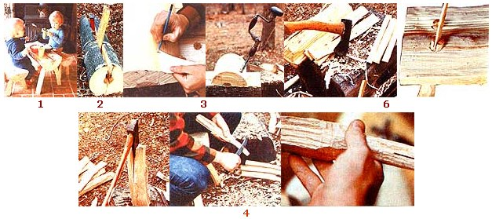

Since the procedures for making split-log furniture don't vary much from one particular item to another, I'll go through the steps only once - in this case describing a bench. To make the table, just repeat the steps, modifying only the dimensions. (The table and bench set shown here is kiddie-size; you may wish to make yours larger.)
Step 1: Tools and materials
The tools you'll need for this project are a maul, two splitting wedges, an axe, a hatchet, a brace and 1" bit, a small saw, and a large knife. I split the two benches shown here from a single poplar log with an 11" diameter. The bench legs were split from a single 20" oak log. The wedges that secure the legs to the bench tops can be split from any hard, close-grained wood.
Step 2: Splitting
Begin the bench-top split by tapping a wedge into one end of the log at a 45° angle. Drive the second wedge into the spreading crack until the first can be removed. Continue until the log is split through. Now (if you wish), remove the bark.
Step 3: Drilling the leg holes
To assure a uniform position and angle for each of the four legs, use a paper template when locating and boring the leg holes. Use the brace and 1" bit, and drill completely through the split log.
Step 4: Splitting and shaping the legs
For each bench, split four 3" X 3" pieces from the 20" log (or from a log of whatever length you want the legs to be). Use the hatchet to shape them into uniform leg blanks. Now, whittle one end of each into a rounded dowel that will fit snugly into one of the 1" leg holes. Finally, saw a 4"-deep slot into the shaped end of each of the legs to allow for compression when you use your mallet to drive them into their holes.
Step 5: Splitting wedges and attaching the legs
From the heartwood of a hardwood log, split four wedges about 1" wide, 1/16" thick, and at least 6" long. Whittle each of these to a thin edge on one end, and smooth any rough spots. Now, reopen the compressed slots in the protruding ends of the legs with a saw, and use a mallet to drive a wedge into the slot of each leg. When these are tightly in place, cut the protruding ends of the legs flush with the bench top, and trim the bottom ends of the legs as required.
Step 6: Finishing up
Finally, go over your completed bench with the knife, smoothing any rough spots and potential splinters. A clear wood sealer is all the finish this rustic furniture needs . . . and it will even look great left as is!
|
 |
|
|